Oanda Internship
How can we leverage information from market and news events to support trading decisions?
Role
Research, design (wireframes to medium fidelity)
Timeline
Jul 2020 - Aug 2020

Research, design (wireframes to medium fidelity)
Jul 2020 - Aug 2020
Trading is the buying and selling of goods with the intention of making a profit. Oanda’s trading platform allows its clients to trade currency. For instance, I could buy Euros when they are cheap and sell them when their price goes up to make a profit. The cost of a currency is constantly fluctuating, like the stock market, and is dependent on a number of external factors.
It is good practice for traders to know what is going on in the world so they can be aware of how prices are changing. That is why traders need the news.
Oanda was in the process of migrating to React, which became the opportunity to update the design of their existing app, including its experience. I was asked to explore the News feed within the app, which is where clients go to see News events (ex. market announcements and updates).
Currently, the News feed is a list of News events organized by date. Each event consists of a headline, timestamp, and source. The article itself is quite sparse too, consisting mainly of text.
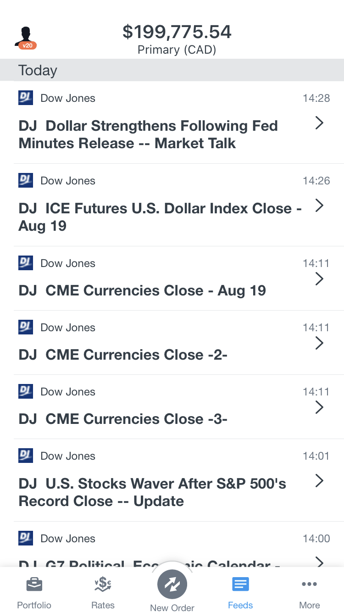
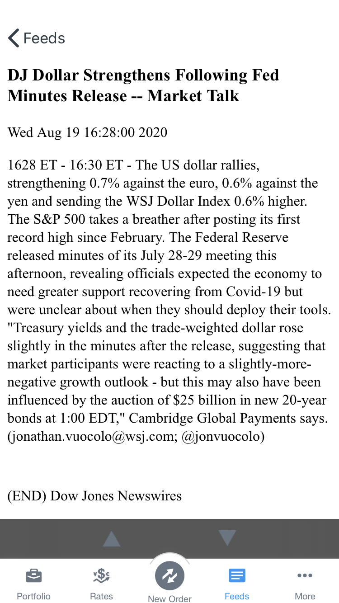
The current News feed wasn’t awful. It was functional and provided the necessary information.
When asked where they go to see market announcements and updates, several Oanda clients cited other sources of News events. From this we inferred that Oanda’s News feed would not be their first pick, despite its in-app convenience.
Understand
Competitive analysis
Review client interviews
Secondary research
User flow
Define
Design goals
Design
Wireframe explorations
Medium fidelity
Validate
Unmoderated A/B test
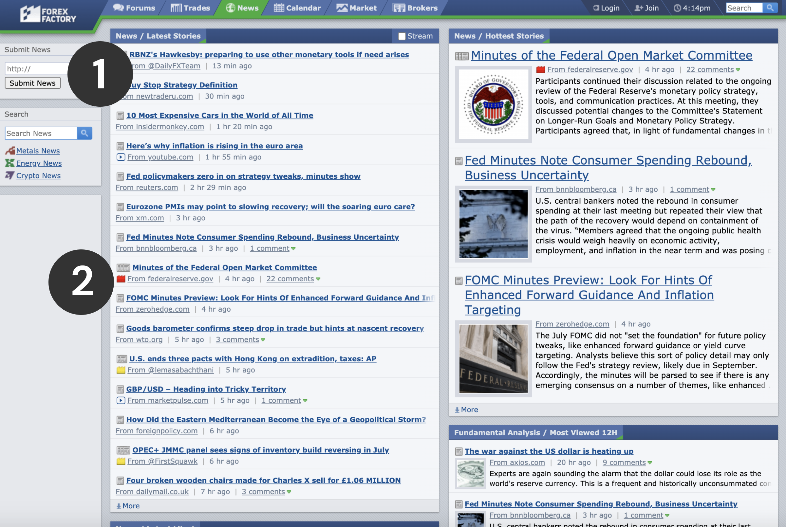
News sorted into categories
Market impact of news indicated by colour
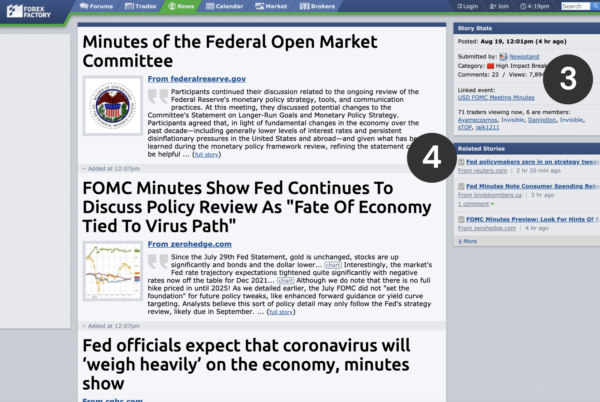
View count of article indicates how many other traders are also watching this market
Related articles allow traders to read accounts from different sources
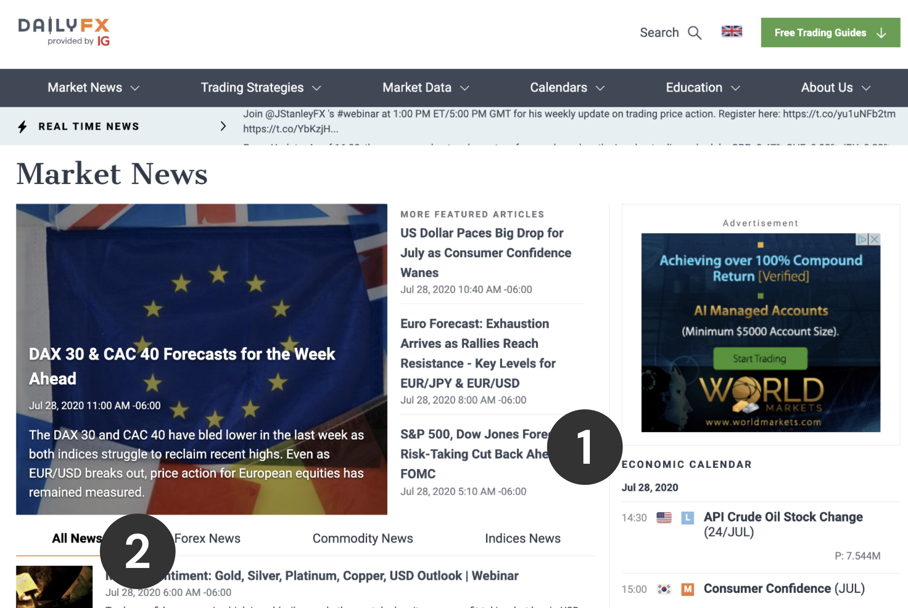
Economic calendar available beside news
News sorted into categories (tabs)
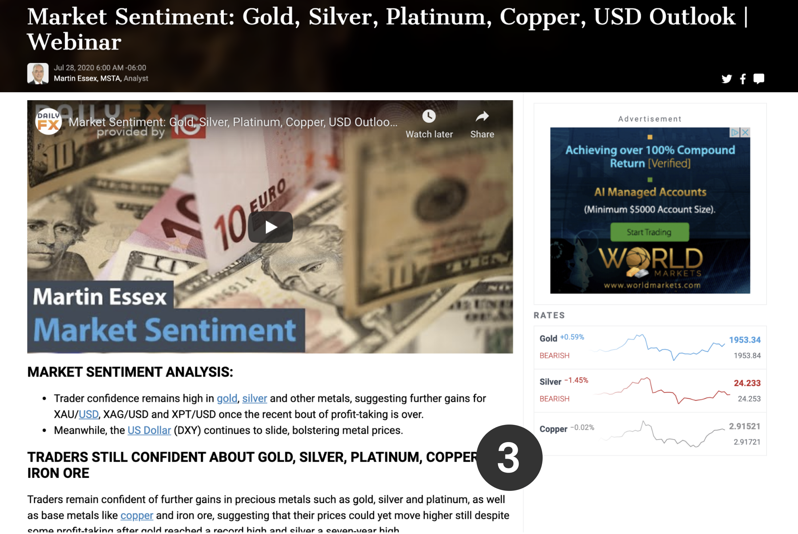
Rates and charts related to the article. Can click on the commodity to see more information
I wanted to understand how traders made decisions from News events. I did this by reviewing interviews the design team facilitated with Oanda clients from the year before. Clients were asked how they made certain decisions based on the News. I also watched YouTube videos and browsed several trading forums on the topic.
Where do traders go to get their news information?
How do traders decide what news events are relevant?
How do traders use news information?
How do traders decide whether or not to open a trade based on a news event?
Past interviews showed that it was clear our traders had variable strategies when it came to interpreting News events. However it was agreed that:
I created a user flow diagram to outline key decisions traders may make while interpreting News events. Doing so would help ensure that we were providing information that supported these decisions.
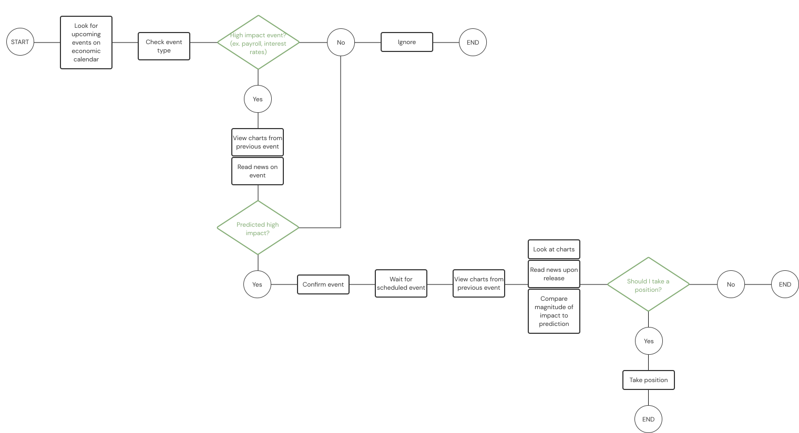
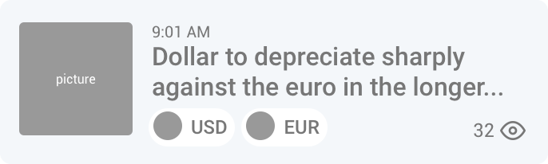
Picture on left
Timestamp above headline
Related currencies below headline
Impact not indicated
View count at bottom right
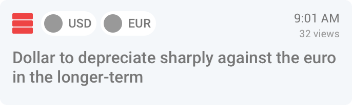
No picture
Timestamp at top right
Related currencies above headline
Impact indicated by colored stripes
View count below timestamp
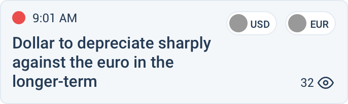
No picture
Timestamp above headline
Related currencies at top right
Impact indicated with colored dot
View count at bottom right
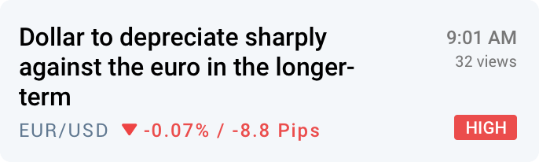
No picture
Timestamp at top right
Daily percent change indicated instead of currencies
Impact indicated with tag
View count below timestamp
I also explored how an article could look, using technical data components that already existed within Oanda's design system.
Related rates and charts so traders can compare technical data to the information in the article
Related articles so traders can compare the information in the article to other sources
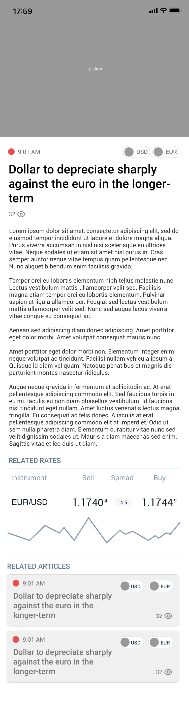
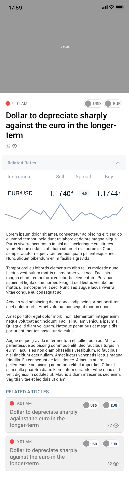
I created 2 medium fidelity prototypes. One where the headlines were given in cards, another where they were separated by dividers.
I added a tab between News and Economic Calendar as they are used in conjunction with each other
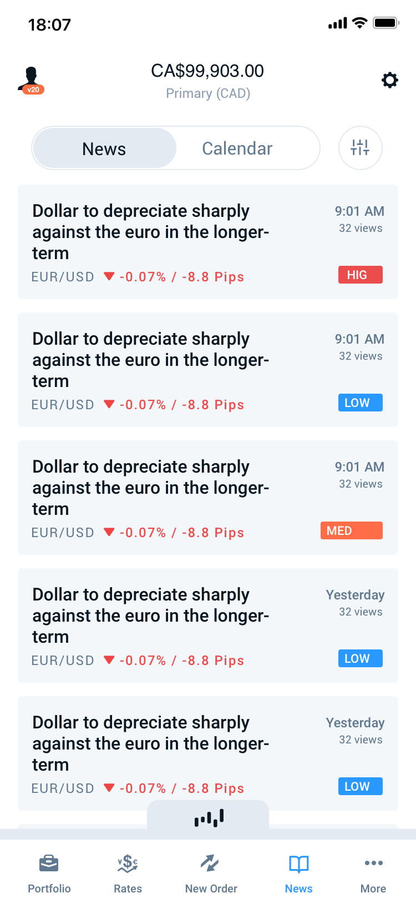
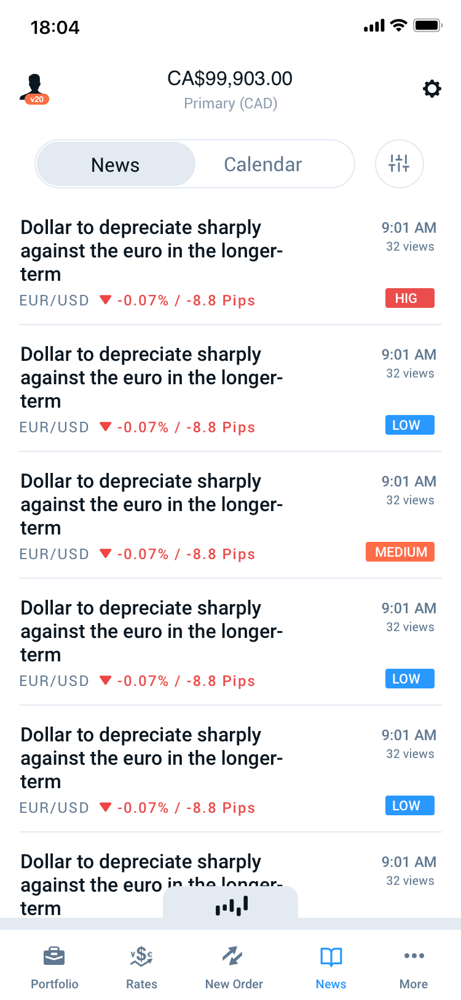
The card option was too playful for a News feed, where information should appear creditable.
I decided to proceed with an A/B test between the current News experience and the newly designed medium fidelity prototype. This would allow me to both test my assumption (given that the current experience scarcely had any information) while also allowing me to discern whether the new prototype was an improvement over the existing.
Current |
New |
|
|---|---|---|
This news feed supports my trading needs |
3.9 |
4.3 |
This prototype provides enough information for me to conduct my trading activity. |
3.2 |
3.9 |
This prototype allows me to confidently conduct my trading activity. |
3.2 |
3.9 |
Current |
New |
Both |
|
|---|---|---|---|
Which prototype supports your trading needs? |
2 |
7 |
1 |
Which prototype provides the information needed to conduct your trading activity? |
2 |
7 |
1 |
Which prototype would make it easier for you to confidently conduct your trading activity? |
1 |
6 |
3 |
Which prototype do you prefer overall? |
2 |
7 |
1 |
It was clear that the new prototype was an improvement from the old prototype. However, 2 users preferred the existing experience, while one user was indifferent. These 2 users liked that the existing experience provided a reputable source.
Users agreed that more information improved confidence because it gave them the opportunity to compare multiple sources of information, both technical and fundamental in order to make a more informed decision. We had already made an improvement by providing more of this information, but based on our results, there was still more we could do.
User testing definitely revealed a lot more insight into how traders make decisions from news events. Clearly, confidence was a big factor. From the 2 users who preferred the existing prototype, confidence also meant knowing where your information came from.
Now that we knew the importance of confidence, we could directly engage to inquire more about it. We needed to ask how can we use our information to help traders be more confident with their decisions prior to ordering a trade?
Traders are interesting people! Personally, I would love to watch a Netflix documentary on the world of forex trading. A lot of decisions they make are very psychological and that's why it's so interesting to design for them; you really have to understand how they think.
I think one thing I would have liked to do would have been benchmarking the current experience. I didn't get a chance to do that, and tried to make up for it with an A/B test, but I think taking to a client and explicitly asking them about the current experience before doing anything else would have been more valuable, apart from providing me with starting metrics. I might have been able get to the crux of the problem faster, and I still feel like I'm missing an important issue that hasn't been discovered.
I learned a lot from this project because I was given a lot of freedom to approach the problem how I saw best. I think having access to interviews from clients really helped me understand just how complex decision making can be when trading. That's what motivated me to think more critically about why information is useful in the context of trading.
💙 Jennifer (yourself)
© Coded with 💙 by jennyfurhe